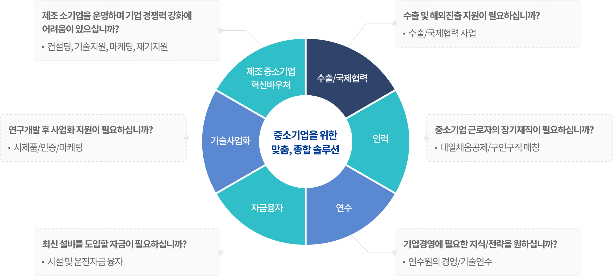
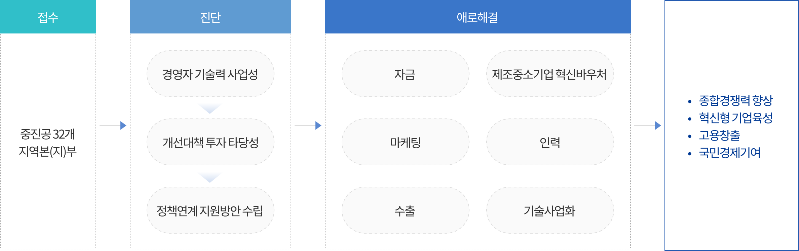

사업소개 및 지원내용


사업소개 및 지원내용
업종전문가가 진단을 통해 기업애로를 분석 후, 해결책을 제시하고, 애로 해결을 위한 정책사업을 연계지원
입주기업 신청절차

- STEP 01
- 진단
- 경영 + 기술전문가
- 기술 및 산업 분석
- 핵심역량 / 경영성과 분석
- STEP 02
- 해법제시
- 기업개선 전략 및 로드맵 제시
- 혁신성장 솔루션 제공

- STEP 03
- 정책연계지원
- 정책자금, 연수, 마케팅, 수출, R&D등과 연계
- 타기관 연계
진단 및 개선로드맵 제시
경영 및 기술전문가가 중소기업 현장을 방문하여 경영환경, 기업역량·문제점을 분석하고 기업애로 해결을 위한 개선 로드맵 및 실천계획 수립
※ 챌린지 진단은 고탄소 배출기업, 그린분야 기업, 디지털 전환 기업을 대상으로 챌린지 미션(경영성과 KPI) 부여 후 미션 달성을 위해
종합진단(3MD)과 함께 컨설팅 전문가를 활용한 집중 컨설팅(7MD)지원
정책사업 연계지원
기업진단을 기반으로 애로해결 또는 성장에 필요한 정책사업을 맞춤연계추천하여 정책자금 지원기업의 지속성장을 견인

지원절차

무료로! 언제! 어디서든! 기업이 편리하게 스스로 진단 할 수 있도록 비대면 진단 서비스를 제공 해드립니다.
비대면진단 무료 신청하기비대면 진단이란?
- 기업이 스스로 매월마다 기업 및 성과 정보를 입력하면 산업동향 및 강·약점 등 빅데이터 기반
기업 내·외부 분석결과를 자동으로 도출해주는 비대면 방식의 기업진단 서비스
활용예시
1. 자동차 전장부품 제조기업 A과장은 비대면진단을 통해 매월마다 평균가동률 등 생산성이 낮아지는 것을 확인
2. (원인도출) 생산성이 낮아지는 원인은 “설비 가동 효율성 저하”로 파악
3. (솔루션 제공) A과장은 공정관리에 대한 솔루션을 통해 설비의 리드타임을 개선하여 회사의 생산성 증대에 기여